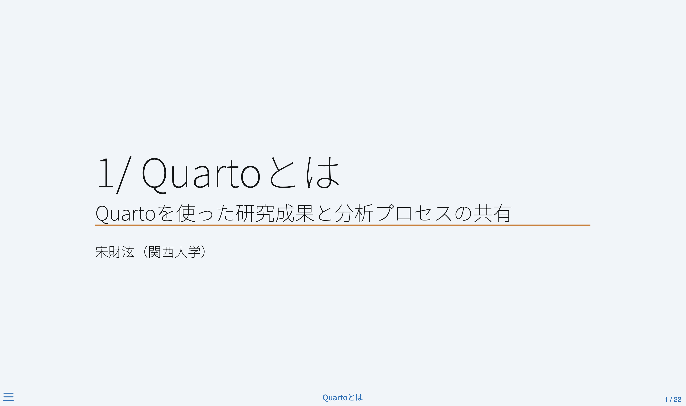

6/ 文書とスライドの共有
Quartoを使った研究成果と分析プロセスの共有
（通常の）HTMLファイルの限界
- 我々が見ているWEBブラウザ上の画面は1つのHTMLファイルだけではない。
- HTML（骨格とテキスト）、CSS（見た目、書式）、画像・動画、JavaScript1など
- HTMLだけを共有しても、我々が想定したものと違ったものが表示される。
- HTML単体にすべてのものを埋め込む必要がある


ファイルのアップロード（1）
- Add file > Upload filesを選択

ファイルのアップロード（2）
- 必要なファイルをDrag & Dropし、下段の「Commit changes」

- Standalone HTMLならファイルのみ
- それ以外の場合、
*_filesフォルダーや画像が格納されているフォルダー1等も入れる必要がある。